Delivering affordable, eco-friendly solutions for households, communities and businesses in Soweto and beyond.
Reducing waste sent to landfill through separation at source and responsible collection.
Sustainable practices that protect our communities and the planet for future generations.
Our mobile cleaning machines re-use water — a scarce and vital resource.
A local Soweto business with a passion for cleaner communities.
Leshole-Leruo Cooperative trading as Mr Bin Cleaner & Waste Management is a specialist company delivering professional, affordable and sustainable solutions to all issues relating to bins.
Founded by Joseph Leshole Ramogale in 2016 as a mobile wheelie bin cleaning business in Soweto, we quickly expanded into full waste management after recognising the growing need for better waste solutions in our community.
Over the years our offerings have grown to include bin sales, bin liners, bin spares, bin repairs, refuse bags, E-Waste collection through Pikitup, and an upcoming food waste composting stream using Bokashi Bran — where we teach households and commercial kitchens how to turn food waste into valuable compost.
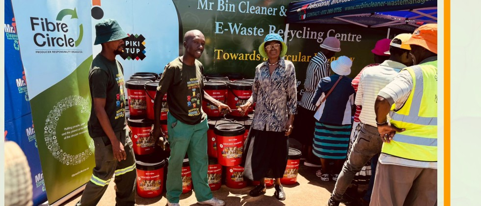
E-Waste Recycling Centre – working with the communityTo deliver professional, affordable and sustainable bin and waste solutions while educating and empowering communities to keep our environment clean.
Expanding food waste composting and strengthening our recycling value chain for a circular economy.
Comprehensive solutions for cleaner bins and responsible waste handling.
Households and communities separate waste weekly into plastic bags. We collect, sort further at our facility, and return materials to the value chain — reducing landfill and illegal dumping.
Teaching households and commercial kitchens how to process food waste with Bokashi Bran and turn it into nutrient-rich compost. Service currently in development.
Our facility in Protea Glen Ext 12 serves as a hub for sorting and processing recyclable materials collected from the community.
Collected at schools, domestically and at events. We also operate a Buy-Back Centre where walk-ins and waste reclaimers can bring materials for cash.
New bins, spare parts and professional repairs to keep your wheelie bins in top condition.
Quality liners and refuse bags for clean and efficient waste handling.
On-site cleaning, sanitising and deodorising using a water-recycling machine that conserves this precious resource.
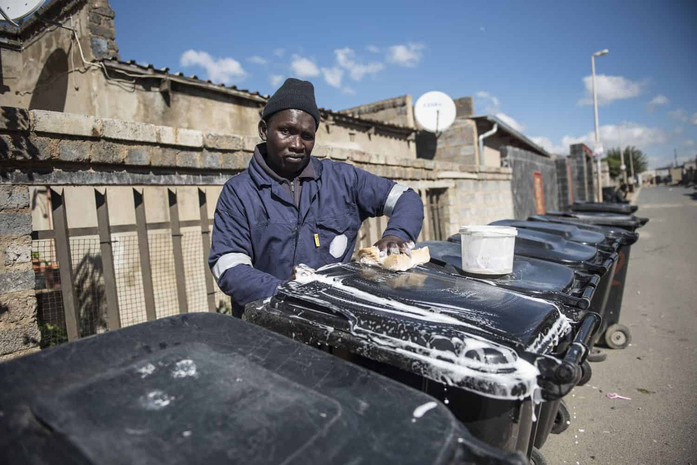
Mobile bin cleaning in the community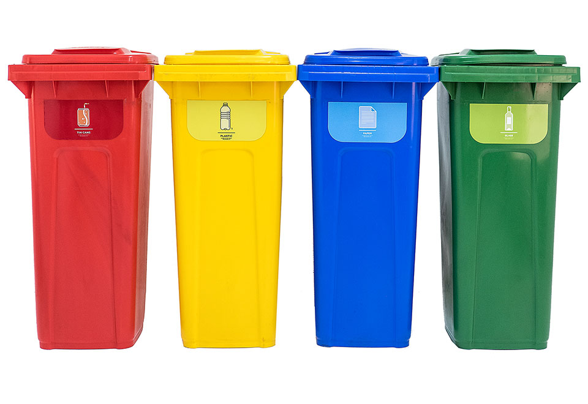
Quality wheelie bins availableWe believe clean environments start with informed and active citizens.
We organise clean-up and recycling walkathons where the entire community walks and cleans the streets together — raising awareness about environmental cleanliness and the importance of recycling.
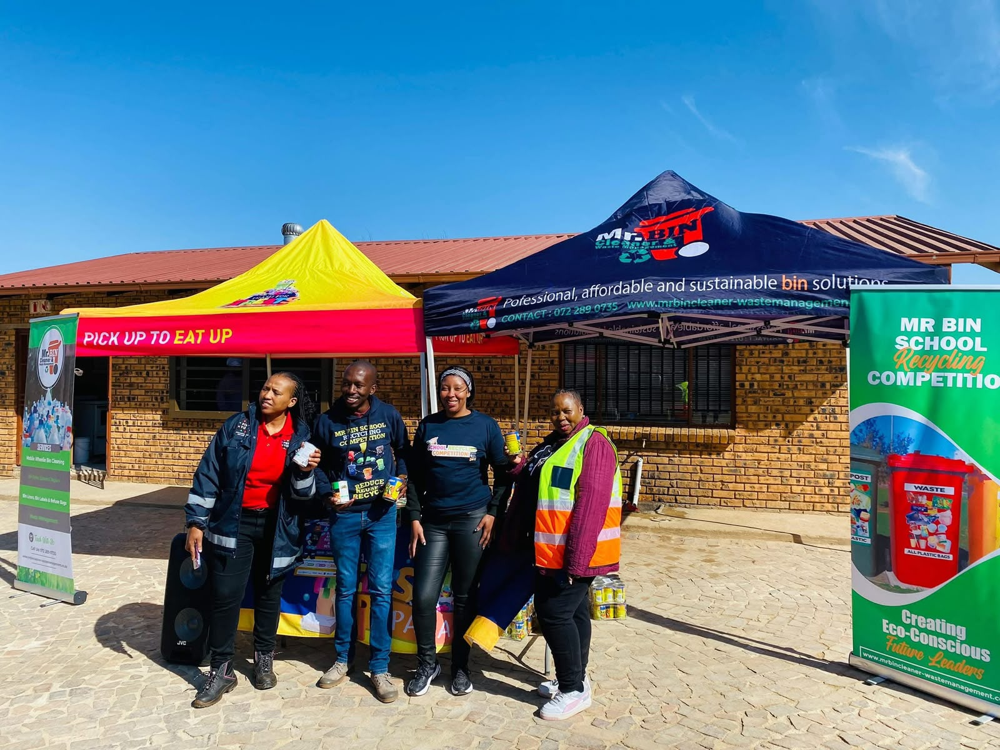
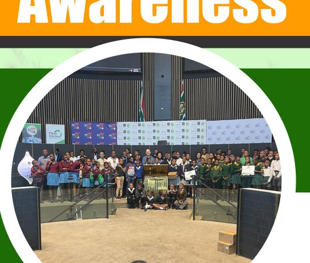
Debates held at the City of Johannesburg Council Chambers (2024) focused on waste and environmental issues, encouraging schools to collect recyclables and raise awareness.
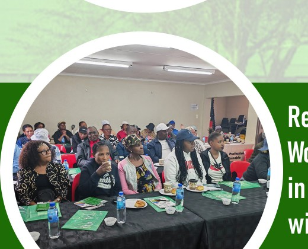
Recycling workshops in partnership with organisations such as HEINEKEN to educate residents on proper waste separation and recycling practices.
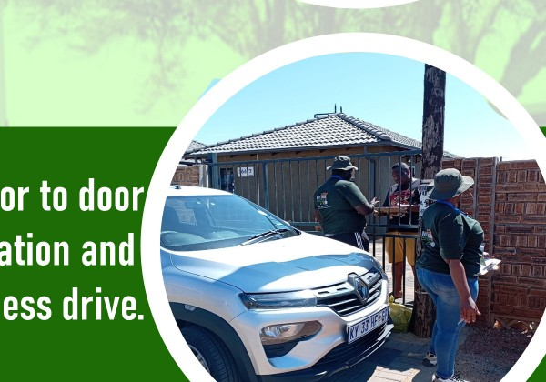
Direct engagement with households through door-to-door awareness drives to promote separation at source and responsible waste behaviour.
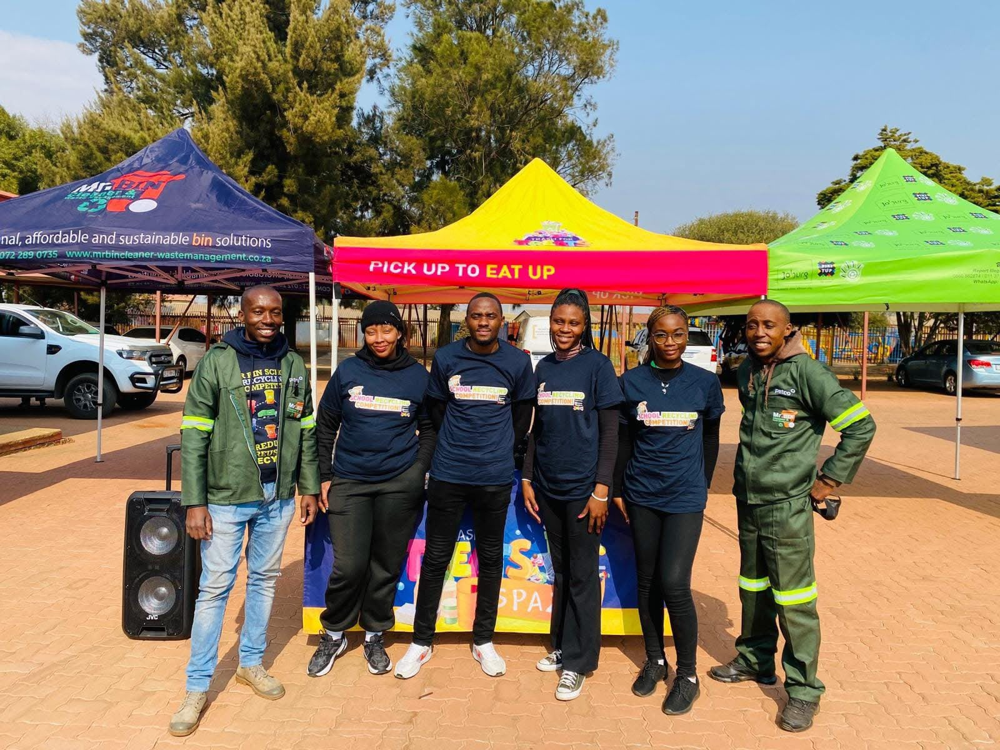
Working hand-in-hand with residents, schools and reclaimers.
Weekly collection of pre-sorted waste from households. Materials are taken to our facility, further sorted, and fed back into the recycling value chain — keeping streets clean and reducing illegal dumping.
Located in Protea Glen Ext 12. Walk-ins and waste reclaimers can bring recyclable materials and receive cash — supporting informal collectors while recovering valuable resources.
Engaging young people through competitions and debates that foster lifelong habits of environmental responsibility and recycling.
Large-scale community events that combine physical activity with litter collection and recycling education, building pride and ownership of neighbourhood spaces.
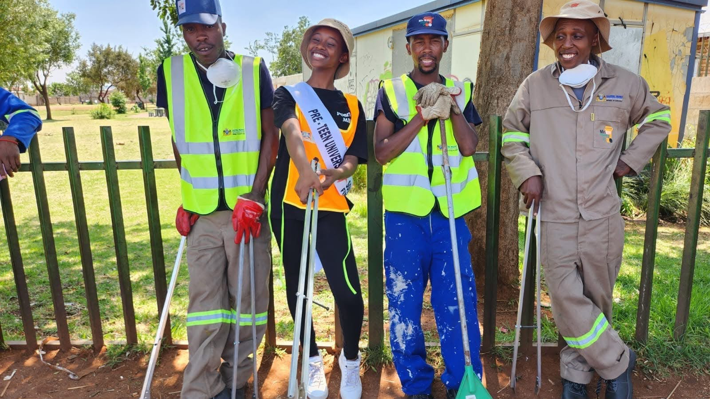
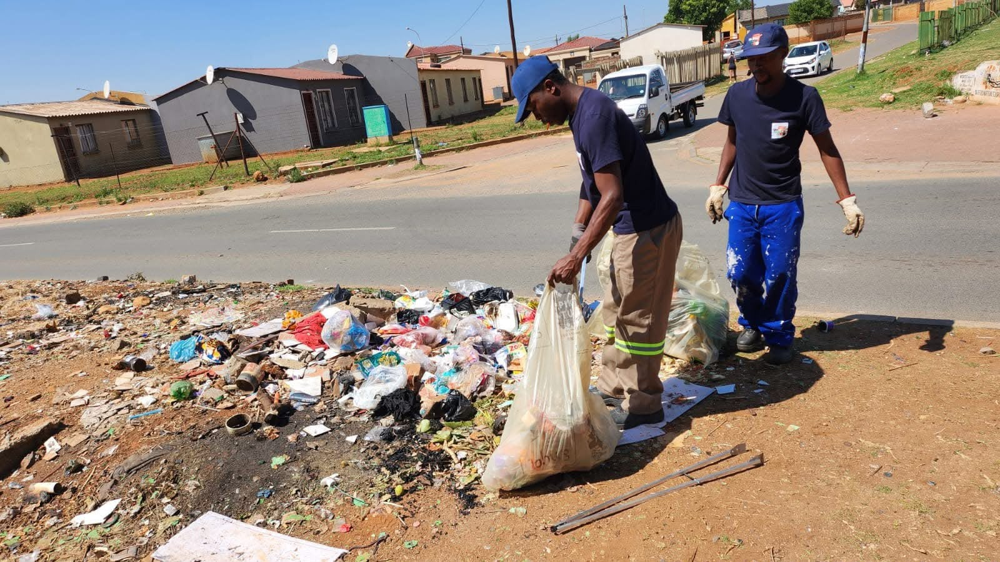
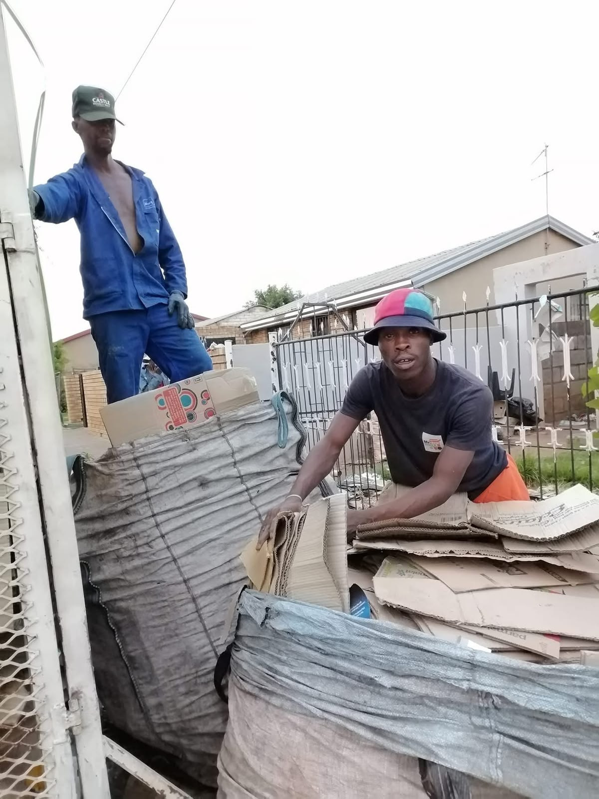
Ready for cleaner bins or better waste solutions? Reach out today.
Soweto, Johannesburg
Recycling Centre: Protea Glen Ext 12